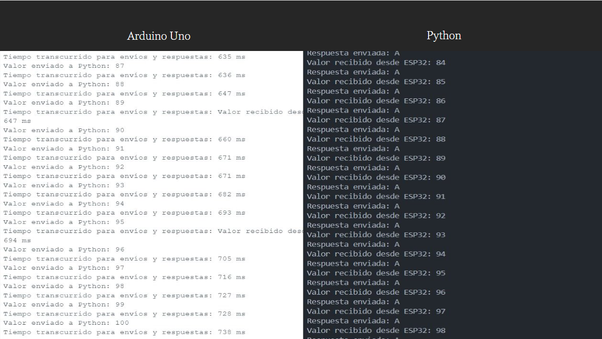
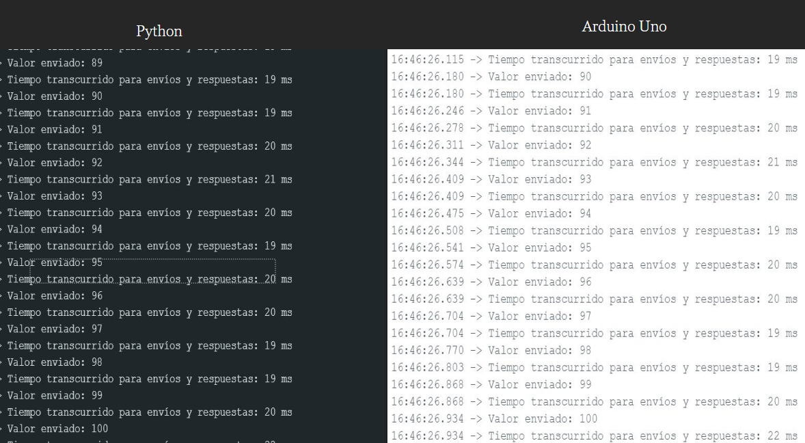

Portafolio de Actividades
Elementos programables II
Departamento de Ciencias e Ingenierías | Universidad Iberoamericana Puebla, México.
Conexion Bluetooth

- Resumen -
En esta práctica se realizó una evaluación comparativa entre Bluetooth Clásico y Bluetooth Low Energy (BLE), con el objetivo de analizar sus principales diferencias en términos de consumo energético, velocidad de transmisión, alcance y capacidades de conexión.
La práctica permitió comprender las fortalezas y limitaciones de cada tecnología, y su aplicación óptima según el tipo de dispositivo o sistema a implementar. Se concluye que la elección entre Bluetooth Clásico y BLE depende del equilibrio entre rendimiento y eficiencia energética, según los requerimientos específicos de cada aplicación.
- Introducción -
Bluetooth es una tecnología de comunicación inalámbrica de corto alcance que permite la transferencia de datos entre dispositivos electrónicos sin necesidad de cables físicos. Opera en la banda de frecuencia de 2.4 GHz y está diseñada para crear redes personales (PAN) con bajo consumo energético, facilitando la conexión entre teléfonos móviles, computadoras, audífonos, sensores, dispositivos portátiles y más. Existen dos principales variantes de esta tecnología: Bluetooth Clásico, que se utiliza principalmente en aplicaciones que requieren un flujo continuo de datos (como audio o transferencia de archivos), y Bluetooth Low Energy (BLE), que está optimizado para aplicaciones que demandan bajo consumo energético y transmisión esporádica de datos, como en el caso de dispositivos IoT o wearables.
- Este microcontrolador cuenta con bluetooth integrado low Energy. Se realizo un programa que envia datos de la computadora al esp y calcula el tiempo que la operacion tomo.
Conexion Bluetooth ESP32
Codigo ESP32:
"#include
#include
#include
#include
// UUID del servicio y de la característica
#define SERVICE_UUID "dfe84f7c-4f03-43b2-b1c7-9f1fe9b5d734"
#define CHARACTERISTIC_UUID "e839aa2d-88aa-45a0-8f6b-fc7c0b22b106"
BLEServer *pServer = nullptr;
BLECharacteristic *pCharacteristic = nullptr;
bool deviceConnected = false;
bool oldDeviceConnected = false;
unsigned long startTime; // Variable para almacenar el tiempo de inicio
// Clase callback para manejar la conexión y desconexión
class MyServerCallbacks : public BLEServerCallbacks {
void onConnect(BLEServer *pServer) {
deviceConnected = true;
Serial.println("Dispositivo conectado");
}
void onDisconnect(BLEServer *pServer) {
deviceConnected = false;
Serial.println("Dispositivo desconectado");
}
};
// Clase callback para manejar la escritura en la característica BLE
class MyCallbacks : public BLECharacteristicCallbacks {
void onRead(BLECharacteristic *pCharacteristic) override {
Serial.println("Solicitud de lectura");
}
void onWrite(BLECharacteristic *pCharacteristic) {
String rxValue = pCharacteristic->getValue();
if (rxValue.length() > 0) {
Serial.print("Valor recibido desde Python: ");
Serial.println(rxValue.c_str());
}
}
};
void setup() {
// Inicializa la comunicación serial
Serial.begin(115200);
// Inicializa el dispositivo BLE con un nombre
BLEDevice::init("ESP32_BLE_Hec");
// Crea el servidor BLE
pServer = BLEDevice::createServer();
pServer->setCallbacks(new MyServerCallbacks());
// Crea el servicio BLE
BLEService *pService = pServer->createService(SERVICE_UUID);
// Crea la característica BLE con propiedades de lectura, escritura y notificación
pCharacteristic = pService->createCharacteristic(
CHARACTERISTIC_UUID,
BLECharacteristic::PROPERTY_READ |
BLECharacteristic::PROPERTY_WRITE |
BLECharacteristic::PROPERTY_NOTIFY
);
// Agrega el descriptor para habilitar notificaciones
pCharacteristic->addDescriptor(new BLE2902());
// Asigna el callback para gestionar la escritura
pCharacteristic->setCallbacks(new MyCallbacks());
// Inicia el servicio BLE
pService->start();
// Configura y comienza la publicidad, incluyendo el UUID del servicio
BLEAdvertising *pAdvertising = BLEDevice::getAdvertising();
pAdvertising->addServiceUUID(SERVICE_UUID);
pAdvertising->setScanResponse(true);
BLEDevice::startAdvertising();
Serial.println("Esperando conexión BLE...");
}
void loop() {
// Maneja la reconexión si el dispositivo se desconectó
if (!deviceConnected && oldDeviceConnected) {
delay(500); // Espera un momento para que la conexión se estabilice
pServer->startAdvertising(); // Reinicia la publicidad
Serial.println("Esperando conexión BLE...");
oldDeviceConnected = deviceConnected;
}
// Si el dispositivo está conectado, envía datos
if (deviceConnected) {
startTime = millis(); // Inicia el contador de tiempo
for (int i = 0; i < 100; i++) {
// Envía un valor al Python
String valueStr = String(i + 1); // Envía valores del 1 al 100
pCharacteristic->setValue(valueStr.c_str());
pCharacteristic->notify(); // Envía notificación a los clientes conectados
Serial.print("Valor enviado a Python: ");
Serial.println(valueStr);
// Calcula el tiempo transcurrido
unsigned long finalTime = millis() - startTime;
// Muestra el tiempo que tardó en hacer los 100 envíos y respuestas
Serial.print("Tiempo transcurrido para 100 envíos y respuestas: ");
Serial.print(finalTime);
Serial.println(" ms");
}
// Espera un momento antes de repetir
delay(5000);
}
// Actualiza el estado de la conexión
if (deviceConnected && !oldDeviceConnected) {
oldDeviceConnected = deviceConnected;
}
}"
Codigo Python de computadora:
"import asyncio
from bleak import BleakClient
# UUIDs del servicio y la característica
SERVICE_UUID = "dfe84f7c-4f03-43b2-b1c7-9f1fe9b5d734"
CHARACTERISTIC_UUID = "e839aa2d-88aa-45a0-8f6b-fc7c0b22b106"
# Dirección MAC del dispositivo ESP32 (en formato XX:XX:XX:XX:XX:XX)
ESP32_ADDRESS = "7C:2C:67:55:D4:E2"
async def run():
async with BleakClient(ESP32_ADDRESS) as client:
print(f"Conectado a {ESP32_ADDRESS}")
# Función para manejar la recepción de datos
def notification_handler(sender, data):
received_value = data.decode('utf-8')
print(f"Valor recibido desde ESP32: {received_value}")
# Envía una respuesta al ESP32
response = "A" # Puedes cambiar este valor por cualquier carácter que quieras enviar
asyncio.create_task(client.write_gatt_char(CHARACTERISTIC_UUID, response.encode('utf-8')))
print(f"Respuesta enviada: {response}")
# Suscribirse a las notificaciones de la característica
await client.start_notify(CHARACTERISTIC_UUID, notification_handler)
# Mantener la conexión activa
while True:
await asyncio.sleep(1)
# Ejecutar el bucle de eventos
asyncio.run(run())"
Resultado:
Conexion Bluetooth Arduino:
Para el Arduino se ocupa un modulo externo de Bluetooth ya que este microcontrolador no tiene Bluetooth integrado. En este caso se uso un modulo de Bluetooth clasico
Codigo para conexion bluetooth en Arduino:
"#include SoftwareSerial.h
// Configuración del módulo HC-06
const int rxPin = 10; // Pin RX del HC-06 conectado al pin 10 del Arduino
const int txPin = 11; // Pin TX del HC-06 conectado al pin 11 del Arduino
SoftwareSerial bluetooth(rxPin, txPin); // Crear objeto SoftwareSerial
unsigned long startTime; // Variable para almacenar el tiempo de inicio
bool enviarDatos = true; // Bandera para controlar el envío de datos
void setup() {
// Inicializar la comunicación serial con la computadora
Serial.begin(9600);
Serial.println("Iniciando comunicación Bluetooth...");
// Inicializar la comunicación Bluetooth con el HC-06
bluetooth.begin(9600);
delay(1000); // Esperar a que el módulo HC-06 se inicialice
}
void loop() {
// Verificar si se ha recibido el comando "Restart" desde el Monitor Serial
if (Serial.available()) {
String input = Serial.readStringUntil('\n'); // Leer la entrada hasta el salto de línea
input.trim(); // Eliminar espacios en blanco o saltos de línea adicionales
if (input == "Restart") {
enviarDatos = true; // Activar el envío de datos
Serial.println("Reiniciando envío de datos...");
}
}
// Enviar datos a Python si la bandera está activada
if (enviarDatos) {
for (int i = 1; i <= 100; i++) {
startTime = millis(); // Inicia el contador de tiempo
bluetooth.println(i); // Enviar el valor actual a Python
Serial.print("Valor enviado: ");
Serial.println(i);
// Esperar a recibir una respuesta de Python
if (bluetooth.available()) {
char response = bluetooth.read(); // Leer la respuesta de Python
Serial.print("Respuesta recibida: ");
Serial.println(response);
}
// Calcula el tiempo transcurrido
unsigned long finalTime = millis() - startTime;
// Muestra el tiempo que tardó en hacer los 100 envíos y respuestas
Serial.print("Tiempo transcurrido para envíos y respuestas: ");
Serial.print(finalTime);
Serial.println(" ms");
}
// Desactivar la bandera después de enviar los 100 valores
enviarDatos = false;
Serial.println("Envío de datos completado. Escribe 'Restart' para repetir.");
}
}"
Codigo de Python de computadora:
"import serial
import time
# Configuración del puerto serial
ser = serial.Serial('COM13', 9600, timeout=1) # Cambia 'COM3' por el puerto correcto
time.sleep(2) # Esperar a que se establezca la conexión
try:
while True:
if ser.in_waiting > 0: # Verificar si hay datos disponibles
data = ser.readline().decode('utf-8').strip() # Leer y decodificar los datos
print(f"Dato recibido: {data}")
ser.write(b'A') # Enviar el carácter 'A' al Arduino
print("Enviado: A")
except KeyboardInterrupt:
print("Programa terminado")
finally:
ser.close() # Cerrar la conexión serial"
Resultados:
Conclusiones
A través de esta práctica se logró comprender de manera clara las diferencias fundamentales entre Bluetooth Clásico y Bluetooth Low Energy (BLE). Se comprobó que, mientras Bluetooth Clásico es más adecuado para aplicaciones que requieren transmisión continua y mayor ancho de banda, como el audio y la transferencia de archivos, BLE destaca por su eficiencia energética y rápida conexión, siendo ideal para dispositivos que necesitan mantener el consumo al mínimo, como sensores, dispositivos portátiles y aplicaciones IoT. Además, se evidenció que la elección de una u otra tecnología depende directamente de las necesidades específicas del sistema o dispositivo a implementar, ya sea priorizando el rendimiento o la autonomía. Esta experiencia permitió no solo validar las capacidades de cada tecnología, sino también fortalecer los conocimientos prácticos sobre comunicaciones inalámbricas, lo cual es fundamental en el desarrollo de soluciones modernas e inteligentes.